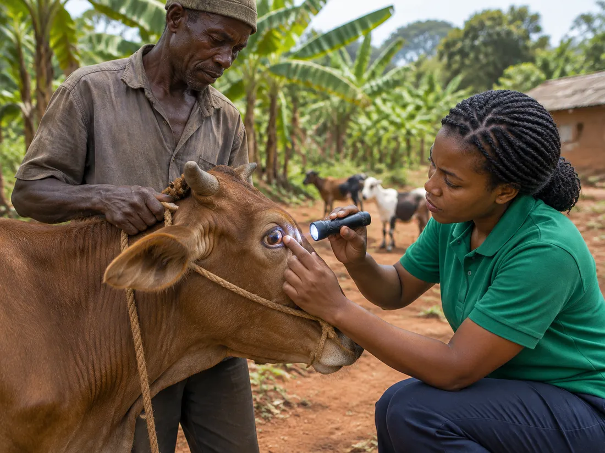

Guide des maladies
Reconnaître les signes, agir à temps
Décrivez ce que vous voyez chez votre animal. Le guide vous montre les maladies possibles, leur gravité et les premiers gestes à faire.
Exemples :
- 0
- fiches maladies
- 0
- espèces couvertes
- 0
- urgences à connaître

Signes d’urgence
Appelez le vétérinaire le jour même si…
Ces signes peuvent cacher une maladie grave ou très contagieuse. N’attendez pas, et isolez l’animal en attendant.
- Il respire malBouche ouverte, flancs qui battent, râles.
- Plusieurs morts d’un coupDeux animaux ou plus en quelques jours.
- Du sangDans les crottes, les urines, au nez ou à la bouche.
- Couché, ne se relève plusOu ne mange plus du tout depuis un jour.
- Convulsions, tête tordueTremblements, marche en cercle, agressivité soudaine.
- Ventre gonflé, mise bas bloquéeBallonnement, efforts sans résultat depuis plus d’une heure.
Fiches maladies
Toutes les maladies
Choisir un animal
Cause et recherche
Contenu éducatif : ces fiches aident à reconnaître une maladie, pas à la soigner seul. Seul un vétérinaire peut poser un diagnostic et prescrire un traitement.